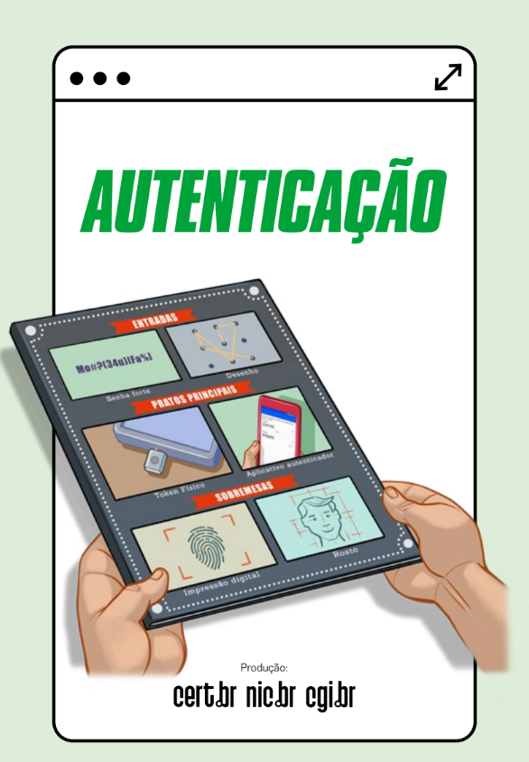
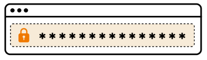

O que é a autenticação?
A autenticação é um mecanismo que ajuda a proteger o acesso às suas contas, funcionando como uma barreira
para evitar que outras pessoas se passem por você.ajuda a proteger o acesso às suas contas,
evitando que alguém se passe por você.

Mas com tantos ataques e vazamentos de dados, usar apenas senhas pode não ser proteção suficiente.
É preciso reforçar com uma segunda etapa de verificação. Veja aqui os cuidados para deixar suas contas mais seguras.
